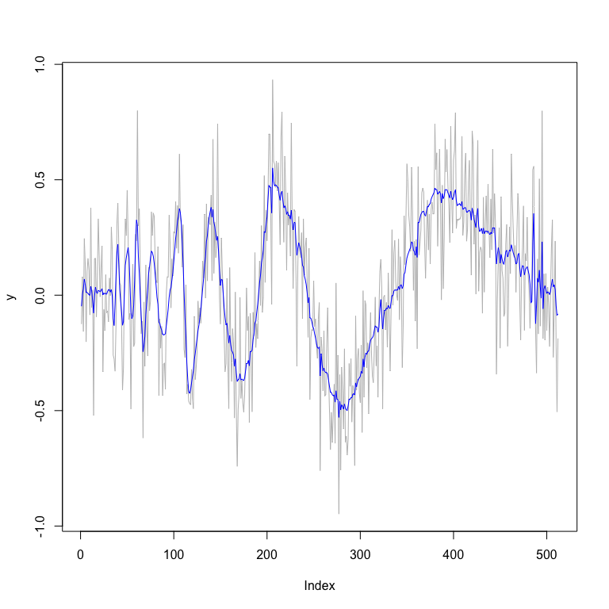
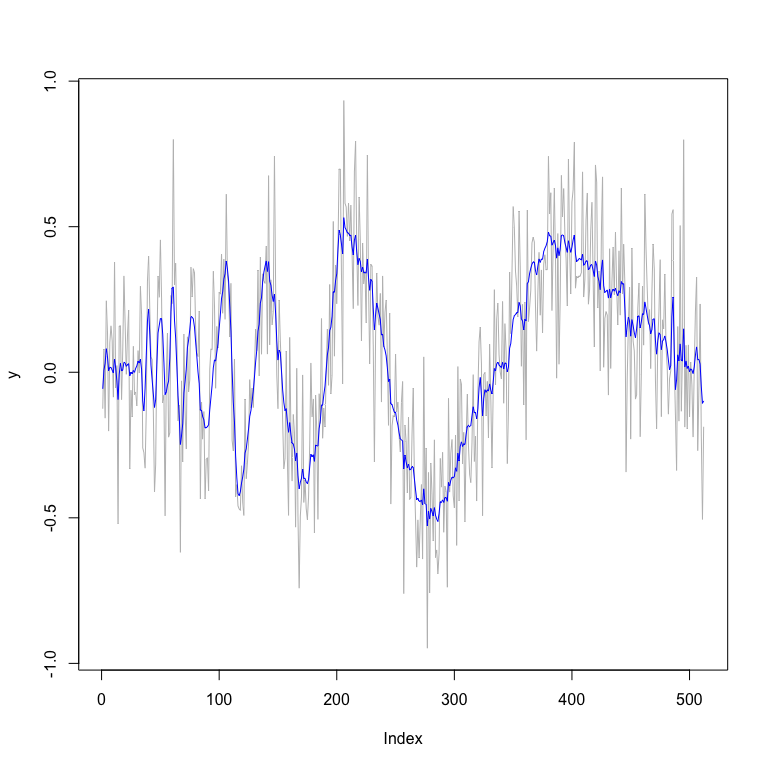

performs Bayesian wavelet analysis using individual non-local priors as described in Sanyal & Ferreira (2017) and non-local prior mixtures as described in Sanyal (2025).
Installation
You can install the development version of NLPwavelet like so:
install.packages("NLPwavelet")Install from GitHub
# install.packages("devtools")
devtools::install_github("nilotpalsanyal/NLPwavelet")The main function:
BNLPWA is the main function of this package that performs Bayesian wavelet analysis using individual non-local priors as described in Sanyal & Ferreira (2017) and non-local prior mixtures as described in Sanyal (2025). It currently works with one-dimensional data. The usage is described below.
library(NLPwavelet)
#>
#> Welcome to NLPwavelet!
#>
#> Website: https://nilotpalsanyal.github.io/NLPwavelet/
#> Bug report: https://github.com/nilotpalsanyal/NLPwavelet/issues
# Using the well-known Doppler function to
# illustrate the use of the function BNLPWA
# set seed for reproducibility
set.seed(1)
# Define the doppler function
doppler <- function(x) {
sqrt(x * (1 - x)) * sin((2 * pi * 1.05) / (x + 0.05))
}
# Generate true values over a grid
n <- 512 # Number of points
x <- seq(0, 1, length.out = n)
true_signal <- doppler(x)
# Add noise to generate data
sigma <- 0.2 # Noise level
y <- true_signal + rnorm(n, mean = 0, sd = sigma)
# BNLPWA analysis based on MOM prior using logit specification
# for the mixture probabilities and polynomial decay
# specification for the scale parameter
fit_mom <- BNLPWA(data=y, func=true_signal, r=1, wave.family=
"DaubLeAsymm", filter.number=6, bc="periodic", method="mom",
mixprob_dist="logit", scale_dist="polynom")
plot(y,type="l",col="grey") # plot of data
lines(fit_mom$func.post.mean,col="blue") # plot of posterior 
# smoothed estimates
fit_mom$MSE.mean
#> [1] 0.006592428
# BNLPWA analysis using non-local prior mixtures using generalized
# logit (Richard's) specification for the mixture probabilities and
# double exponential decay specification for the scale parameter
fit_mixture <- BNLPWA(data=y, func=true_signal, r=1, nu=1, wave.family=
"DaubLeAsymm", filter.number=6, bc="periodic", method="mixture",
mixprob_dist="genlogit", scale_dist="doubleexp")
plot(y,type="l",col="grey") # plot of data
lines(fit_mixture$func.post.mean,col="blue") # plot of posterior 
# smoothed estimates
fit_mixture$MSE.mean
#> [1] 0.006335836
# Compare with other wavelet methods
library(wavethresh)
#> Loading required package: MASS
#> WaveThresh: R wavelet software, release 4.7.2, installed
#> Copyright Guy Nason and others 1993-2022
#> Note: nlevels has been renamed to nlevelsWT
wd <- wd(y, family="DaubLeAsymm", filter.number=6, bc="periodic") # Wavelet decomposition
wd_thresh_universal <- threshold(wd, policy="universal", type="hard")
fit_universal <- wr(wd_thresh_universal)
MSE_universal <- mean((true_signal-fit_universal)^2)
MSE_universal
#> [1] 0.009054956
wd_thresh_sure <- threshold(wd, policy="sure", type="soft")
fit_sure <- wr(wd_thresh_sure)
MSE_sure <- mean((true_signal-fit_sure)^2)
MSE_sure
#> [1] 0.01758871
wd_thresh_BayesThresh <- threshold(wd, policy="BayesThresh", type="hard")
fit_BayesThresh <- wr(wd_thresh_BayesThresh)
MSE_BayesThresh <- mean((true_signal-fit_BayesThresh)^2)
MSE_BayesThresh
#> [1] 0.007527764
wd_thresh_cv <- threshold(wd, policy="cv", type="hard")
fit_cv <- wr(wd_thresh_cv)
MSE_cv <- mean((true_signal-fit_cv)^2)
MSE_cv
#> [1] 0.008710683
wd_thresh_fdr <- threshold(wd, policy="fdr", type="hard")
fit_fdr <- wr(wd_thresh_fdr)
MSE_fdr <- mean((true_signal-fit_fdr)^2)
MSE_fdr
#> [1] 0.007777847
# Compare with non-wavelet methods
# Kernel smoothing
fit_ksmooth <- ksmooth(x, y, kernel="normal", bandwidth=0.05)
MSE_ksmooth <- mean((true_signal-fit_ksmooth$y)^2)
MSE_ksmooth
#> [1] 0.01518292
# LOESS smoothing
fit_loess <- loess(y ~ x, span=0.1) # Adjust span for more or less smoothing
MSE_loess <- mean((true_signal-predict(fit_loess))^2)
MSE_loess
#> [1] 0.01059615
# Cubic spline smoothing
spline_fit <- smooth.spline(x, y, spar=0.5) # Adjust spar for smoothness
MSE_spline <- mean((true_signal-spline_fit$y)^2)
MSE_spline
#> [1] 0.01083473References:
Sanyal, Nilotpal, and Marco AR Ferreira. “Bayesian wavelet analysis using nonlocal priors with an application to FMRI analysis.” Sankhya B 79.2 (2017): 361-388. https://doi.org/10.1007/s13571-016-0129-3
Sanyal, Nilotpal. “Nonlocal prior mixture-based Bayesian wavelet regression.” arXiv preprint arXiv:2501.18134 (2025). https://doi.org/10.48550/arXiv.2501.18134